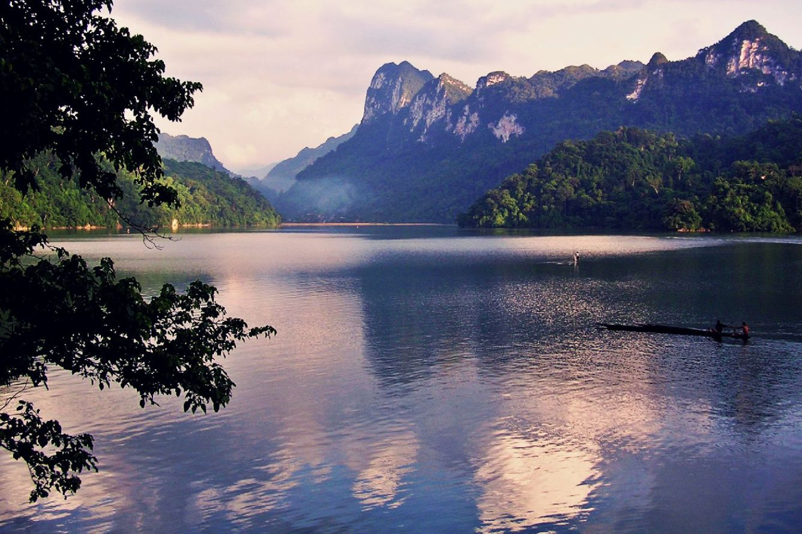

Nếu Tây Bắc thường làm người ta choáng ngợp bởi những đỉnh đèo cao vút chọc trời, thì Đông Bắc lại mang đến một cảm giác êm đềm, dào dạt bởi hệ thống sông hồ, thác nước tự nhiên kỳ vĩ. Điểm nhấn rực rỡ nhất của vùng đất này chính là giai đoạn từ tháng 8 đến tháng 10 hàng năm – khoảng thời gian được mệnh danh là "mùa nước đổ ngọc bích". Lúc này, những cơn mưa rào mùa hạ đã lùi xa, nhường chỗ cho dòng nước trong vắt, khí hậu mát mẻ và thảm thực vật hai bên bờ tràn trề nhựa sống.
Đông Bắc mang đến một cảm giác êm đềm, dào dạt bởi hệ thống sông hồ, thác nước tự nhiên kỳ vĩ, rực rỡ nhất trong "mùa nước đổ ngọc bích".
Tuyệt tác Thác Bản Giốc mùa nước đổ
Đến với Cao Bằng, lữ khách sẽ được diện kiến Thác Bản Giốc – thác nước lớn thứ 4 thế giới nằm trên đường biên giới giữa hai quốc gia. Trong mùa này, nguồn nước dồi dào khiến thác tuôn trào mạnh mẽ qua 3 tầng đá vôi. Tiếng thác đổ ầm ào vang vọng cả một góc trời, bọt nước tung trắng xóa tạo thành một lớp sương mù mờ ảo. Đặc biệt, vào những ngày nắng đẹp, ánh mặt trời chiếu xuyên qua màn sương nước sẽ tạo nên những chiếc cầu vồng lung linh, huyền ảo như chốn bồng lai tiên cảnh.

Mộng mơ Hồ Ba Bể
Tiếp nối bản tình ca Đông Bắc là Hồ Ba Bể (Bắc Kạn) – một trong 20 hồ nước ngọt tự nhiên trên núi lớn nhất thế giới. Trái ngược với sự ồn ào của thác Bản Giốc, Hồ Ba Bể mùa thu mang một nét mộng mơ, tĩnh mịch. Mặt hồ phẳng lặng, xanh trong tựa như một viên ngọc khổng lồ phản chiếu trọn vẹn mây trời, vách đá và những tán cây cổ thụ. Ngồi trên chiếc thuyền nhỏ lướt nhẹ trên sông Năng, ghé thăm Động Puông hay Đảo Bà Góa, lắng nghe câu hát Then vút cao của các cô gái Tày, du khách sẽ thấy lòng mình nhẹ bẫng, rũ bỏ hoàn toàn những muộn phiền của nhịp sống đô thị.

Sẵn sàng cho những chuyến đi giữa Mây Ngàn?
Các tour du lịch của Mây Ngàn Travel đang mở đặt chỗ. Số lượng có hạn — hãy giữ chỗ trước khi hết!
Khám phá ngay